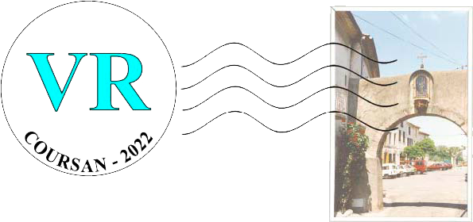

Exposition "Coursan Autrefois"
en réalité virtuelle

Bienvenue dans l'expérience de réalité virtuelle "Coursan Autrefois". Pour vivre une expérience optimale, merci d'utiliser un casque VR de type Oculus, HTC Vive, Google daydream, Samsung GearVR, Vive focus, etc...
Cependant, il est tout à fait possible de tester l'expérience avec votre ordinateur ou votre smartphone. Pour cela déplacez le curseur au milieu de l'écran et cliquez avec le bouton gauche de votre souris (pour une utilisation sur ordinateur ) ou avec un doigt (pour une utilisation via smartphone ou tablette). Vous pourrez ainsi utiliser les socles de téléportation..
Avec votre ordinateur ou smartphone

Avec un casque VR (réalité virtuelle), l'expérience sera bien plus ludique. Utilisez les lasers et les gâchettes des contrôleurs pour pointer les socles de téléportation et ainsi vous déplacer.
Avec votre casque VR

Pour les personnes en situation de handicap visuel (problèmes de vue) ou physique (en fauteuil roulant ou ne pouvant rester debout pendant une longue période), vous pouvez à l'aide des contrôleurs cliquer sur les photos. Une copie de la photo sera alors dupliquée et ajoutée a votre contrôleur. Vous pourrez ainsi visualiser les photso de plus près.
Accessibilité

Vous pouvez acheter une copie des photos présentes dans cette exposition au prix de 25€/photo pour un tirage sur support PVC aux dimensions 60cm x 40cm. Pour cela merci de contacter M. Claude DE PABLO par téléphone au 06-85-05-83-55 ou via email : dpcnnmb@wanadoo.fr